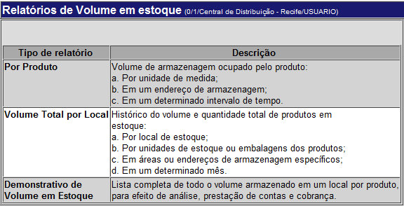

Relatório de Cubagem [ Voltar ]
Volume em Estoque por Produto. Este relatório
permite visualizar o volume de armazenagem em metros cúbicos (m3) total ocupado por um determinado produto, por unidade de medida e por endereço de armazenagem, em um intervalo de tempo. O relatório apresenta também o custo de armazenagem.
Volume Total por Local. Este relatório permite visualizar o histórico mensal do volume em metros cúbicos (m3) total de produtos estocados em um determinado local de armazenagem. Pode ser classificado por unidade de estoque, embalagem e endereço. Demonstrativo de Volume em Estoque. Este relatório permite visualizar a lista completa de todo o volume armazenado em um local por produto, e/ou programa, para efeito de análise, prestação de contas e cobrança. O formulário "Relatório de Cubagem" encontra-se dentro do menu "Relatórios Gerenciais".
Ao clicar no formulário, a seguinte tela será exibida:

Volume em Estoque por Produto1º Passo: clique no relatório por produto.
2º Passo: utilize os filtros existentes para configurar o relatório. Os
campos "Produto", "Mês", "Ano" e "Visualização" são obrigatórios.
4º Passo: se desejar, clique no
botão Volume Total por Local1º Passo: clique no relatório de volume total por local.
A seguinte tela será exibida:
2º Passo: utilize os filtros existentes para configurar o relatório. Os campos em amarelo ("Local", "Mês", "Ano", "Calcular Volume por" e "Visualização") são obrigatórios. 3° Passo: clique no botão
4º Passo: se desejar, clique no
botão
Demonstrativo de Volume em Estoque1º Passo: clique no relatório por produto.
A seguinte tela será exibida:
2º Passo: utilize os filtros existentes para configurar o relatório. Nenhum dos campos é obrigatório mas, para que o relatório possa ser gerado, pelo menos um dos filtros deve ser preenchido. 3° Passo: clique no botão 4º Passo: se desejar, clique no botão  [Imprimir]
do navegador para imprimir o relatório. [Imprimir]
do navegador para imprimir o relatório.
|
 para gerar o relatório.
para gerar o relatório.